k-Day 033｜裂縫
今天的支線任務是中國銀行，昨晚睡前決定把那斷裂的10元拿到銀行更換，看看是否能夠彌補兩岸同胞日漸分裂的感情。
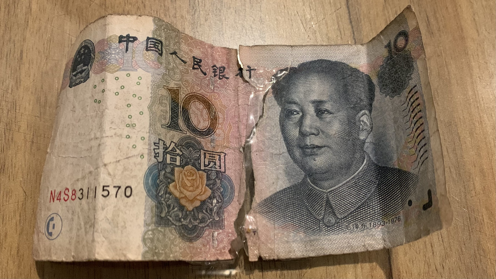
三分鐘的路程剛好有個中國銀行，手上抓著破裂的10元進門，跟警衛說我想換這個錢。他指著櫃檯說：「你直接去問能換就給你換了」。但是櫃檯都有人呢，我就站在後面等著。警衛又說了：「你直接問他」，於是我的手越過正坐在櫃檯前辦事的人，伸手把錢拿給櫃檯後的行員，說：「這錢可以換嗎？」兩位行員分別檢查了一次，收起破裂的10元，直接把一張完整的10元遞給我。
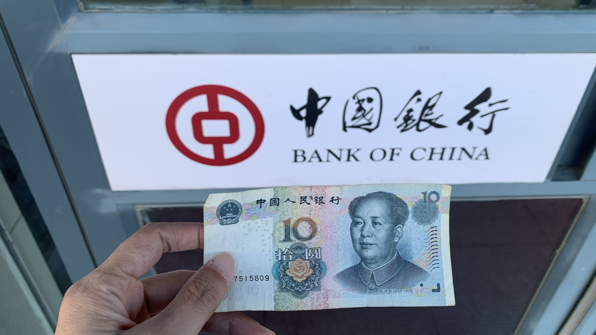
就這樣，兩岸人民之間的裂縫被填補了。
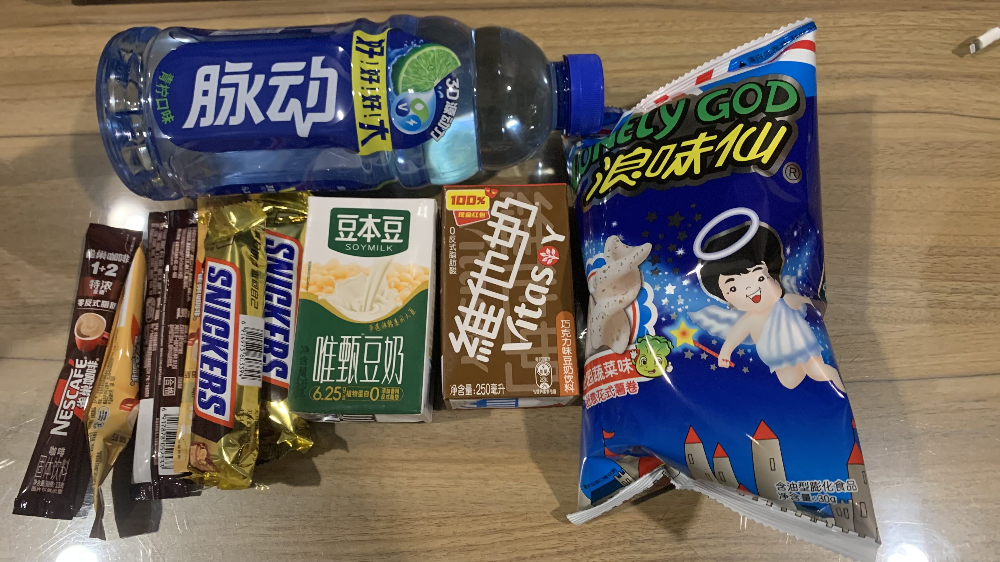
在路口的零食店買了一些存糧，有了前面三天的經驗，已經不太期待能有大口吃肉的日子，就補充一些黃豆牛奶花生之類的。浪味仙是個意外，純粹就像是在異鄉看到國小同學那樣，其實沒特別交情，卻忍不住熱絡地打了招呼說改天一起吃飯啊！
回到飯店吃飽後已經十點半了。有了昨晚的經驗，了解到小地方沒有外賓的容身之處，因此調整一下之後兩週的策略，按照途徑的較具規模的城市安排每天移動的距離。今天應該是前往盤錦的邊緣。
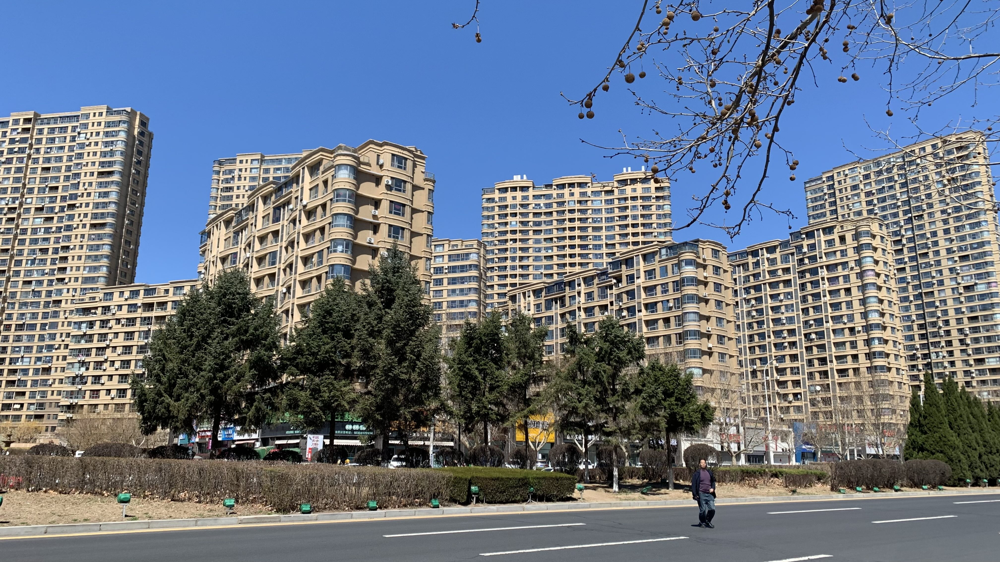
經過一個很像果貿社區的集體住宅，原來再多騎一段路昨天就能抵達市中心了。
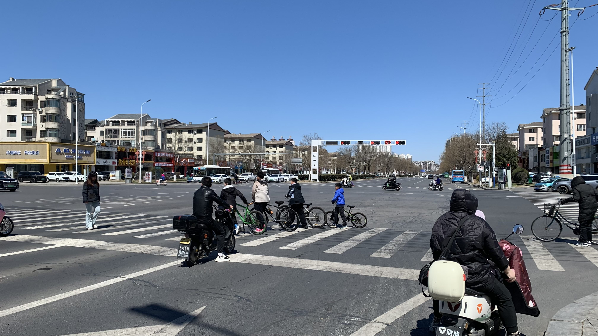
到中國這麼久，第一次看見自行車集團，沒想到自行車運動也能當作城市發展的觀察。正在心裡滿意著，突然有個騎著捷安特全副武裝的大哥靠近我。大哥說：「你這是騎長途啊！從哪裡騎過來的啊？」我說：「日本」大哥沈默了一下，又說：「騎這麼遠了啊！準備騎到哪裡啊？」我說：「巴黎，法國」
大哥又沈默了一下，說：「還帶著帳篷呢。旅途順利啊！」然後就風一般地轉彎走了。我覺得今天會很幸運。
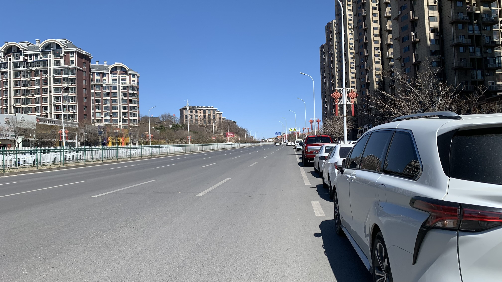
過一條馬路，我的自行車道突然變成路邊停車場，這一點倒是跟前面幾天一樣沒有改變。
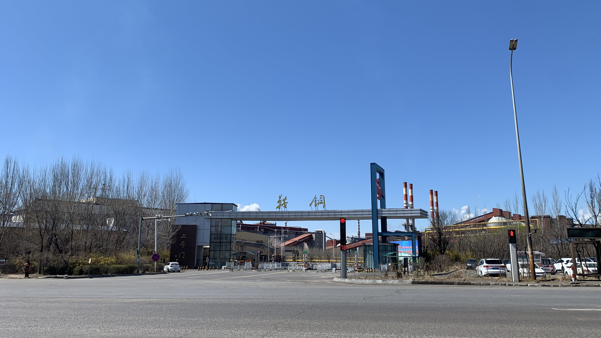
今天的路很大條，叫做濱海大道，雖然比經過市區的國道荒涼，且卡車多了一些，但也許能看見海。
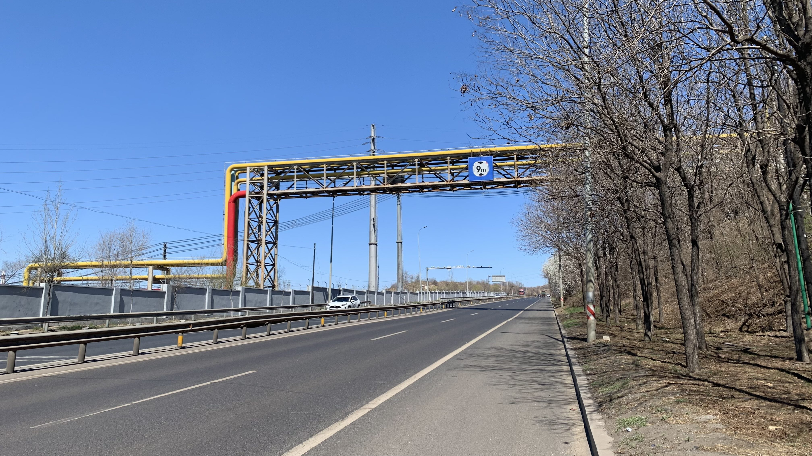
路況是這樣的，雖然小碎石和碎玻璃遍佈，但是路寬得足夠兩部大卡車連結車一起通過，我只要騎在最右邊的碎石上就可以了。
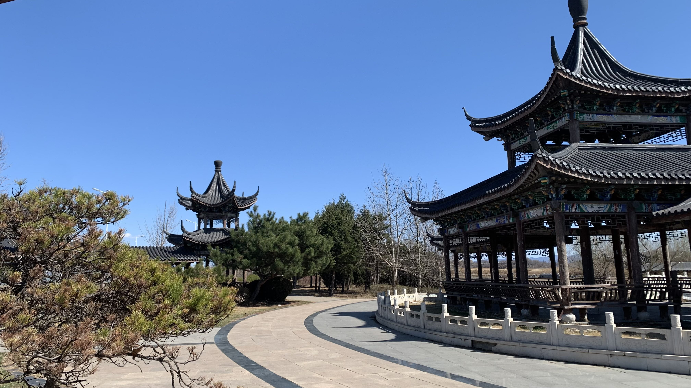
大約下午兩點實在想上廁所，找到一個像是涼亭的地方，然而已經有一對父子在那邊搭帳篷打電動了，只好吃了個行動乾糧再度出發。
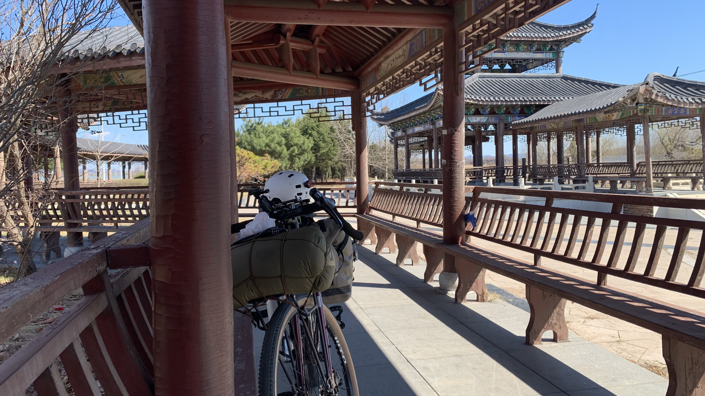
難得可以休息的好地方，如果未來有人也經過濱海大道想上廁所或吃便當可以尋找這個涼亭，我把所有的寶藏都埋在這裡了。
騎了幾個小時，除了某幾秒鐘在縫隙裡看見兩三公分左右的遠方的海平面，完全沒有海景。
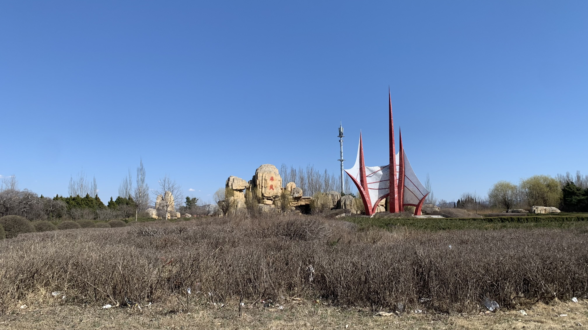
倒是看到不少這種不知所以然的裝置，後方的石頭上刻著「雄風」二字。花錢做這樣沒啥意義的造景，撥點經費改善環境教育，落實垃圾車定時定點清運也許對國家地貌會有更好的美化作用。
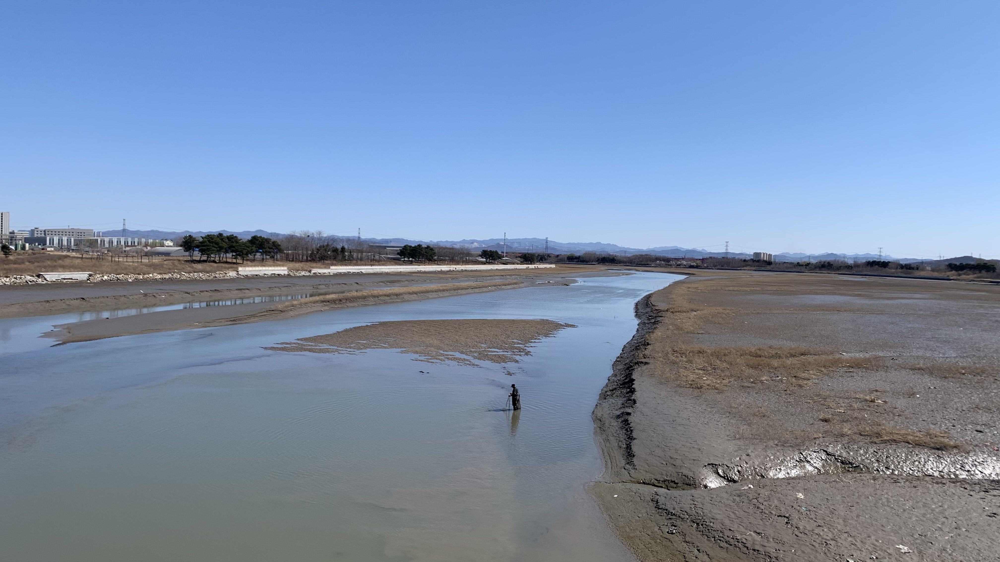
途經一條貌似旱期的河，有個人在撒網捕魚，根據視覺判斷，河水中顯然不只有水和泥沙，希望他不要真的吃下肚才好。
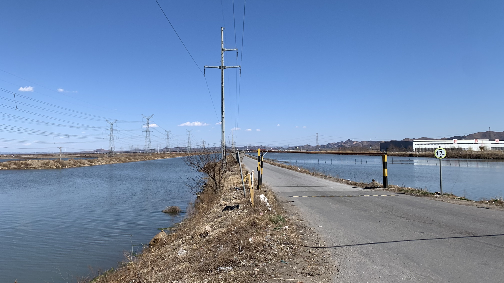
下午三點左右，路旁出現很多這樣的埤塘。按理我應該讚嘆地說：「好美啊！」但照片前景不容忽視的垃圾已經跟了我三天，我騎得多遠，垃圾線就綿延了多遠。
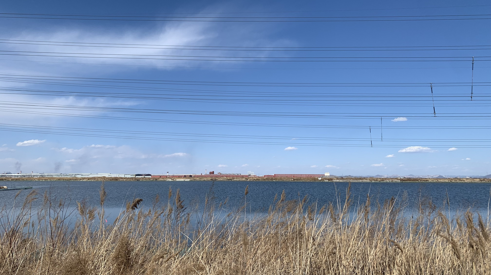
切掉下方的垃圾堆，也許能有些感觸，但是在現場的我實在感受不到絲毫自然之美。當時我心想，如果在日本看到遠處這樣的景象我一定會抬起頭，熱切地想把眼前的畫面盡量印在身體裡，然而此刻畫面的近景也就是我的腳尖前方30公分處就是綿延不盡的垃圾帶。
到中國也四天了，不知道這裡的人們愛不愛自己的國家，但我再次無禮地斷言他們並不愛這塊土地。（是的，我腦中還是不斷浮現這句話。）也許是千年的歷史與巨大的國家集體意識使個體的存在顯得渺小而短暫，每個人都認為自己不重要，自己的行動很微小，以至於像時間的過客一樣，隨意的行動、隨意的消耗，然後離開這個世界。完全沒有一絲一毫要守護著一棵樹，把它留給四百年後經過的人那樣的心情。以前聽說大陸國家的文明比起海島國家更重視累積，事實上卻並非如此。
雖然路面寬敞，幾個小時後仍對於濱海大道有點疲乏，決定轉到平行的另一條路騎看看。
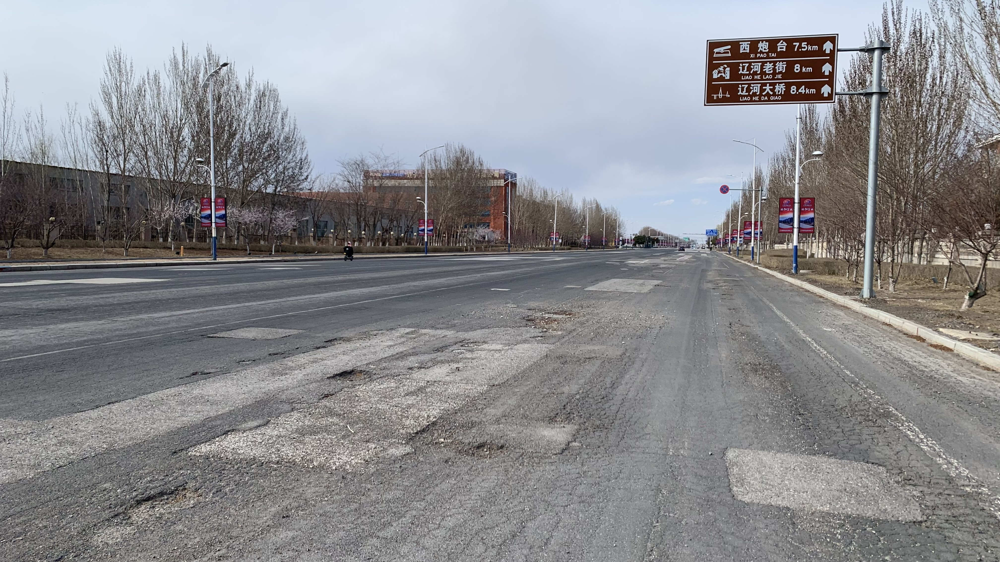
結果經歷了幾公里這樣像是被隕石撞擊的坑洞，於是又往回騎了幾公里回到濱海大道。
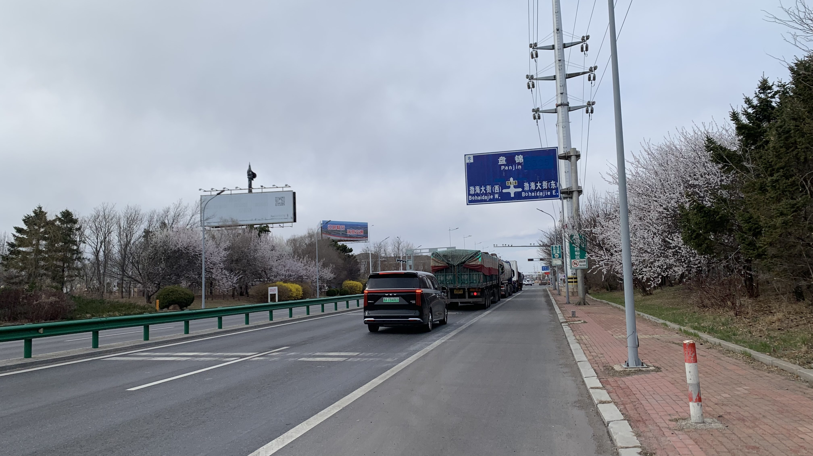
約莫下午四點，終於看到盤錦的指標了。
其實在沒有垃圾的時候，經常會產生這邊的櫻花也開了，他們也和韓國的花一樣美的想法，但是只停留在理性所理解的「這東西應該是美的」想法，感性上我的人本身沒辦法感受到任何美的感動。同樣都是花，只因為周遭包圍著垃圾、廢氣、喇叭聲和誇張的隕石坑洞路面，就無法讓自己盛開的樣子被人欣賞，這些櫻花或許也會感到無奈。面對他們的我也為自己無緣欣賞感到遺憾。
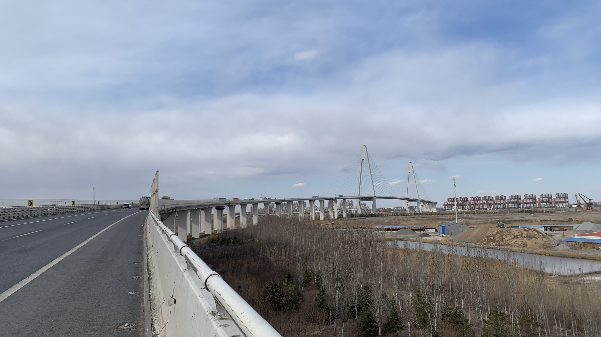
這是遼河大橋，對面就是盤錦了。騎在上面往上抬頭看著白色的鋼索和澄澈的藍色天空時，應該要有短暫的開闊感。我試著感受一下，嗯。
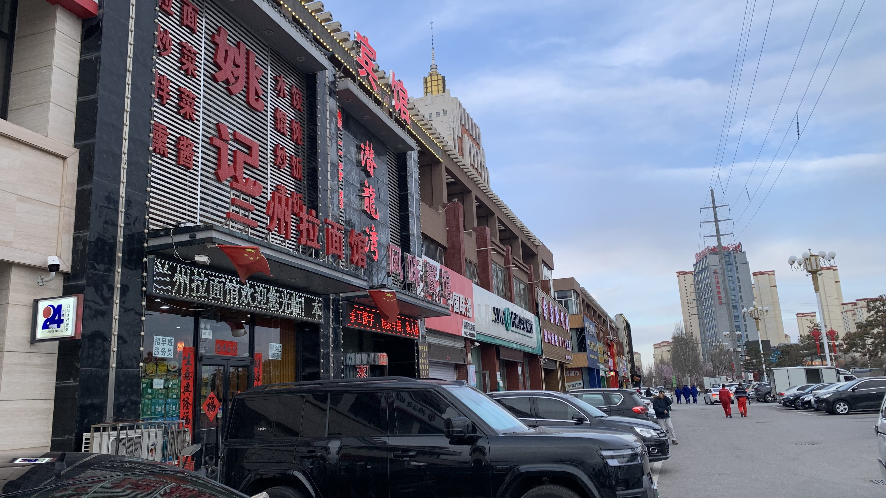
今天氣溫似乎又比昨天更低了，明明才四點怎麼已經冷到發抖。下橋後立刻找了一家餐廳用餐。
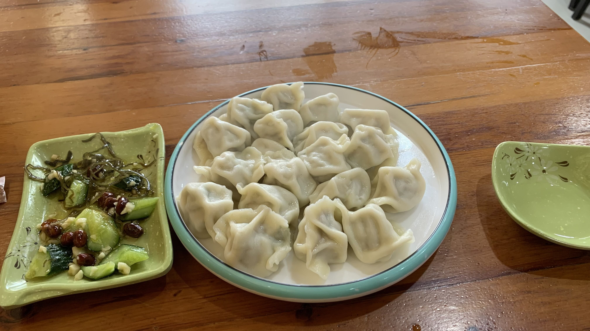
點一份豬肉芹菜和一份素小菜。水餃還沒上桌菜已經快吃光了。
關於水餃，我認為最好吃的是在巴黎。
巴黎有所謂的餃子房，一個小房間住著很多黑戶的中國人，據說在裡面包的餃子銷售到各個中餐館，品質優良。我自己也買過幾次餃子，但是其它地方的人做的不合胃口。除了瀋陽朋友自己包的餃子，網上找的賣東北菜的，還有在巴黎開餐廳的朋友媽媽做的。每個人的餃子各有特色，且全都真材實料新鮮可口，個頭飽滿，外皮厚薄適中，彈性且富有嚼勁，肉質鮮嫩多汁，非常美味，做成煎餃或者水餃都能鎖住食材的靈魂。
今天想碰碰運氣，直接走到餐廳後面的旅店，詢問我能不能住宿。沒想到竟然同意了，還給了比網上更便宜的價格。
大廳放著一輛美利達自行車，櫃檯的妹妹說是老闆的。老闆好品味。台灣的自行車行業相當厲害，比民國歷史還久的Miyata幾年前似乎已是美利達旗下的。在京都Eirin跟二十三號見面時，窗邊就放著一輛嶄新的EBS GROWN系列自行車。當時跟店員說我喜歡這個京都品牌，詢問可否拍照，他立刻說可以，這輛車是台灣製造的。
台灣擁有很多高品質的工廠，可以生產令世界各國滿意的鋼架車，希望台灣本地也有越來越多這樣的在地品牌。
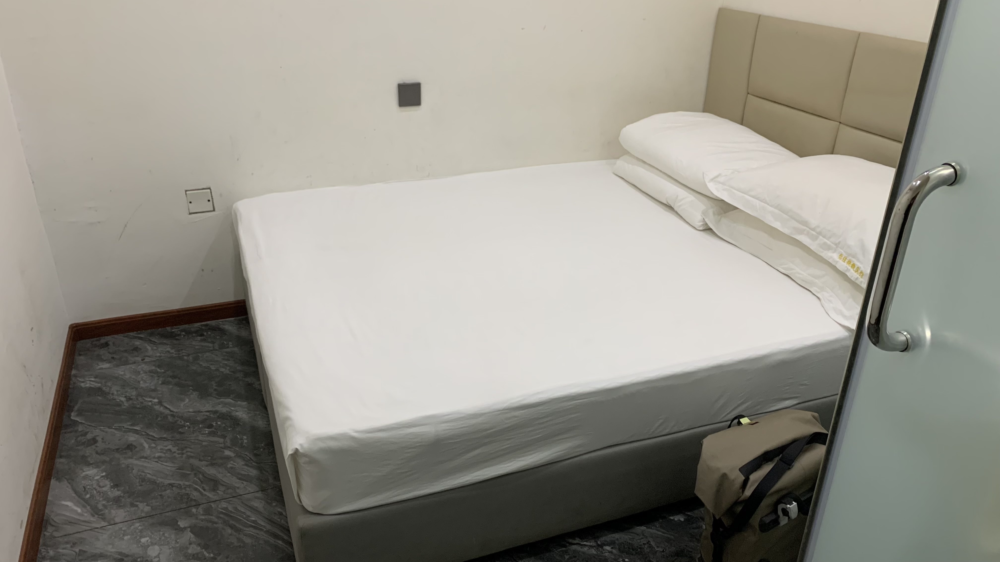
房間是普通的舊式無窗房，沒有多餘的設施。第一次現場問住宿，還沒有比較值。不過櫃檯妹妹幫我開通了支付寶，未來可以用高德地圖訂房，也許過幾天會有更多心得。
今天運動相機一直躺在背包裡，即使在途中曾經數次跟自己說現在可以拿出來了，這裡的風景足夠漂亮，可以錄影了，但我終究沒有這麼做。
高山氣罐在這裡被視為危險物品，無法隨意購買。睡前嘗試在淘寶上尋找賣家，告知移動狀況後，店家願意快速發貨到我的下一個住處。今天開始漸漸取得主動權。
今日花費： 水餃+小菜 24、住宿 98、高山氣罐 345（台幣）